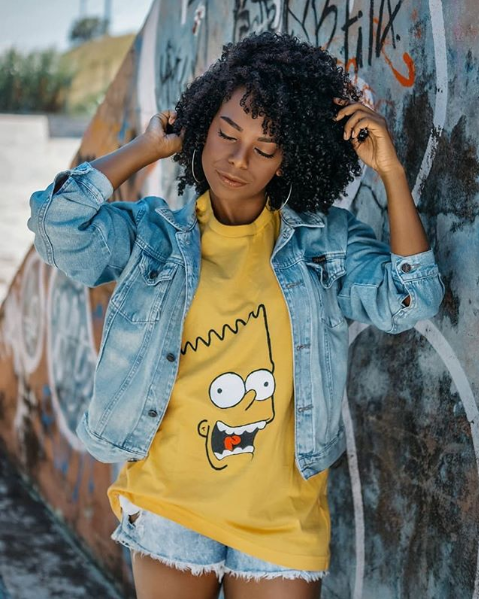

Matérias
Clique nas imagens para acessar os textos
Como tudo começou
A luta pelo voto, a revolução sexual, os novos movimentos sociais e o feminismo interseccional.
PRIMEIRAS IMPRESSÕES
Quando conheci Hawk, eu não sabia como ele era, só sua voz. E assim ele arrancou de mim risos tão sinceros que embarquei numa busca para dar um rosto ao sotaque baiano. E não sosseguei até que conhecesse o rosto e um pouquinho da história da pessoa que me presenteou com boas risadas. Mas ele, assim como todas as pessoas, é muito mais do que aparenta. Quando perguntei o que ele mudaria na sociedade, a resposta extremamente empática carrega um pedaço da personalidade que por vezes, não é perceptível em seus vídeos: “Eu mudaria a disparidade social, acho muito injusto como o capital é dividido e como poucas pessoas conseguem tanto e a maioria luta para sobreviver.”

A conversa com Hawk - que preferiu não me revelar o que ele chamou de “nome real” - foi fácil e em tom de intimidade. Logo nas primeiras trocas de e-mail, ele incluiu um “inferno de celular” - que não respondia os e-mails com a assinatura adequada.
Minha admiração ia crescendo assim como o canal dele no YouTube. Ele conta em um dos seus vídeos, que o canal surgiu como uma forma de superar uma depressão. Para mim, ele diz que “surgiu com a ideia de expressar 'artisticamente' meu cotidiano”.
Hawk nasceu com artrogripose, uma doença rara e grave nas articulações, comprometendo a formação e o crescimento ósseo normal. Ele conta que passou por várias cirurgias e que na infância, embora consumisse muita televisão, o único personagem com que se identificava fisicamente era o Corcunda de Notre Dame.
Quando perguntei sobre o vídeo da tag #TourPeloMeuCorpo, Hawk explicou que decidiu gravá-lo porque está “num processo de tentar fazer coisas que me tirem da zona de conforto”, e acrescenta “acho a ideia dessa tag incrível e senti que podia atingir as pessoas de uma forma diferente. Me senti estranho ao gravar e ao editar também, mas acho que foi importante ter feito isso - tanto pra mim quanto pra algumas pessoas que viram.” E o retorno é claro ao passear pelos comentários do vídeo.
A Tag criada pela também youtuber, Luiza Junqueira, começou com um vídeo falando sobre inseguranças e “padrão de beleza”, passeando por cada detalhe do corpo de Luiza. Esse vídeo gerou onda de auto aceitação na web que fez com que mais youtubers falassem sobre amor próprio e os estereótipos que a mídia costuma reproduzir, gerando uma repercussão imensurável nos jovens que consomem esse tipo de conteúdo. Lais Jasse conta que foi através de uma youtuber que decidiu cortar e assumir seu cabelo, para ela acompanhar blogueiras crespas e cacheadas fez com que ela tivesse “força para passar pela transição” e afirma: “Elas são minhas inspirações, seja na parte de estilo ou na parte de aceitação.”
Não é preciso procurar muito nas fotos de Lais no instagram para perceber que a transição capilar aconteceu há menos de dois anos. Ela, que é muito bem humorada, respondeu as perguntas entre risadas, não aparentando ter qualquer ressentimento sobre: “Na 3ª série, a pressão sobre cabelo começou a me preocupar, e foi aí que fiz minha primeira escova. Mas não foi algo que durou - até escutei algumas meninas falando do meu cabelo - porque como ele nunca tinha passado por nada, a escova não alisou e depois de um tempo ele armou muito.” E foi aí que ela voltou a trançar o cabelo. Ela conta que com o passar do tempo, já não era mais aceitável usar tranças com certa idade e na quinta série já tinha o cabelo todo alisado, “mas eu me sentia bem com ele, porque ele era bonito e até ali ele era saudável.”
Lais decidiu parar com os alisamentos em 2016 e para ela o início “foi uma fase muito difícil, foi quando me senti mais feia. Meu cabelo ficava com duas texturas, a raiz cacheada e a ponta lisa e reta", conta. Quando cortou seu cabelo todo, deixando só a raiz cacheada, ela relembra que "Nunca me senti tão livre! Depois disso, nasceu uma nova Lais: confiante e com a auto estima elevada!”. Ela ainda conta que depois do big chop (na tradução livre “grande corte”, que retira toda a parte do cabelo com química), sofreu com algumas piadas, mesmo dentro de casa “porque lá cabelo bonito é cabelo domado”, e completa: “obviamente muitos criticam o meu cabelo e pedem pra eu alisar, mas isso nunca me afetou.”

“Hoje em dia, depois dessa mudança, a parte do meu corpo que mais gosto é meu cabelo! Ele é minha expressão máxima de mudança interior e de pensamentos. Pra mim não é só meu cabelo, é o modo que eu achei de mostrar que me aceito e que a sociedade vai ter que me aceitar assim também.”
Mas Lais é muito mais do que seu cabelo. Com mais de três mil seguidores, suas fotos são carregadas de energia e harmonia. Ela, que começou a dançar em um grupo de hip hop há cinco anos, acredita que seu modo de vestir reflete o seu cotidiano: “Como a expressão dos negros nesses últimos anos está mais forte, acho que nós agora estamos “gritando” para sociedade, estão percebendo nossa força e beleza. Quando nós nos aceitamos, de alguma forma, influenciamos as pessoas que estão ao nosso redor sem a gente perceber.” Para ela é “triste e desesperador mulheres que transformam completamente seu corpo para serem aceitas por uma sociedade cheia de padrões". Quando não se é esse padrão imposto, “nos questionamos o porquê de não sermos “bonitas”. Quando pergunto sobre como essas discussões a influenciaram, entre risadas ela responde “Atualmente eu me sinto maravilhosamente bem comigo! Eu não importo mais com se eu estou estranha com a roupa que estou usando ou se meu cabelo tá armado o suficiente. Isso com certeza foi algo construído com o tempo”.
“É extremamente errado uma pessoa querer dizer o que você pode ou não usar, já que cada um tem sua vida, cada um tem suas experiências e cada um tem sua história. É muito egoísmo e egocentrismo uma pessoa achar que sua percepção de mundo é melhor do que a outra pessoa.”

Primeiras Impressões
Julgar um livro pela capa impede que você conheça a história por trás.

Mais do que aparentam
O processo de se aceitar e como isso influencia o cotidiano individual.
Continuar: verbo transitivo
Precisa de complemento, um objeto direto e/ou indireto.


{kind=link}
{kind=link}
{kind=link}
{kind=link}
{kind=link}
{kind=link}